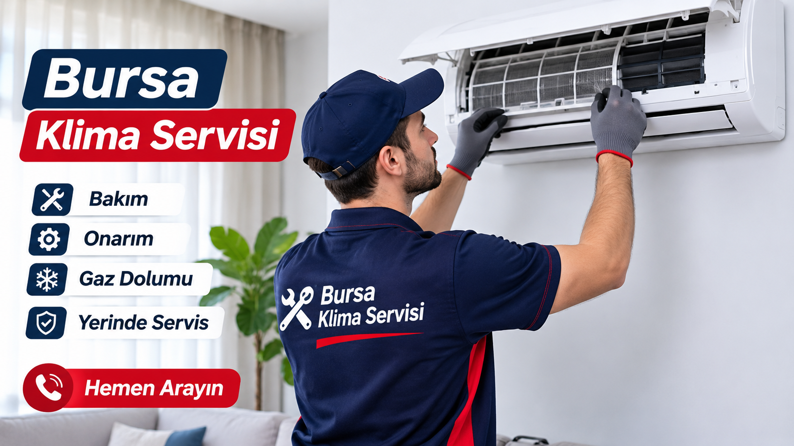

Bursa Klima Servisi
Bursa klima servisi arayışınızda klima arızaları, bakım ve onarım ihtiyaçlarınız hakkında bilgi alabilirsiniz. Klimanız yeterince soğutmuyor, ısıtmıyor, su akıtıyor veya çalışırken ses çıkarıyorsa servis desteği için bizimle iletişime geçebilirsiniz.
Cihazınızın marka ve modelini, yaşadığınız arızayı bize ileterek servis süreci hakkında bilgi alabilirsiniz.
Bursa Klima Arıza ve Onarım Hizmetleri
Klimalar zamanla kullanım koşullarına, bakım ihtiyacına veya teknik sorunlara bağlı olarak performans kaybı yaşayabilir. Klima arızasının doğru değerlendirilmesi için cihazın belirtilerinin incelenmesi gerekir.
Karşılaşılan Klima Sorunları
- Klima yeterince soğutmuyor veya ısıtmıyor.
- Klima hiç çalışmıyor veya kendiliğinden kapanıyor.
- Klima iç ünitesinden su akıtıyor.
- Klima çalışırken normalden fazla ses çıkarıyor.
- Klimada hata kodu veya uyarı ışığı görülüyor.
- Klima hava üflüyor ancak ortamı yeterince soğutmuyor.
- Klima kumandası cihazı çalıştırmıyor.
Bu belirtilerin farklı teknik nedenleri olabilir. Arıza tespiti sonrasında gerekli işlem ve servis kapsamı hakkında bilgi verilir.
Klima Bakımı Neden Önemlidir?
Klima bakımı, cihazın temiz ve verimli çalışmasına yardımcı olur. Düzenli kontrol ve temizlik, kullanım sırasında karşılaşılabilecek bazı sorunların erken fark edilmesini sağlayabilir.
- Filtrelerin kontrol edilmesi ve temizliği
- İç ve dış ünite kontrolleri
- Hava akışının değerlendirilmesi
- Su tahliye hattının kontrolü
- Genel çalışma performansının incelenmesi
Bakımın kapsamı klimanın modeline ve mevcut durumuna göre değişebilir.
Bursa Genelinde Klima Servisi
Bursa genelinde servis ağımız ile klima servis ihtiyaçlarınız için hizmet veriyoruz. Servis talebiniz için bulunduğunuz ilçeyi, cihazınızın marka ve modelini bize iletebilirsiniz.
Osmangazi, Nilüfer, Yıldırım, Gürsu, Kestel, Mudanya, Gemlik ve İnegöl.
Klima Arızalarında Nelere Dikkat Edilmeli?
Klimanızda olağan dışı ses, su akıtma, kötü koku veya çalışma problemi fark ettiğinizde cihazı zorlamamak önemlidir.
Elektrik bağlantılarına, gaz devresine veya cihazın iç parçalarına kendiniz müdahale etmeyin. Sorunun değerlendirilmesi için teknik servis desteği alın.
Sık Sorulan Sorular
Bursa klima servisi hangi bölgelere hizmet veriyor?
Osmangazi, Nilüfer, Yıldırım, Gürsu, Kestel, Mudanya, Gemlik ve İnegöl ilçelerine yönelik servis hizmeti sunuyoruz.
Klima neden yeterince soğutmaz?
Filtre kirliliği, hava akışı sorunları veya teknik arızalar soğutma performansını etkileyebilir. Kesin neden kontrol sonrasında belirlenir.
Klima su akıtıyorsa ne yapılmalı?
Su tahliye hattı veya iç üniteyle ilgili bir sorun olabilir. Cihazı zorlamadan servis desteği almanız önerilir.
Klima servisi için nasıl ulaşabilirim?
0850 308 08 49 numaralı telefonumuzdan bizi arayabilir veya 0505 706 85 98 numaralı WhatsApp hattımızdan mesaj gönderebilirsiniz.
Klima bakım ve arıza tespiti yapılıyor mu?
Klima bakım ve arıza tespiti talepleriniz için bizimle iletişime geçerek servis kapsamı hakkında bilgi alabilirsiniz.